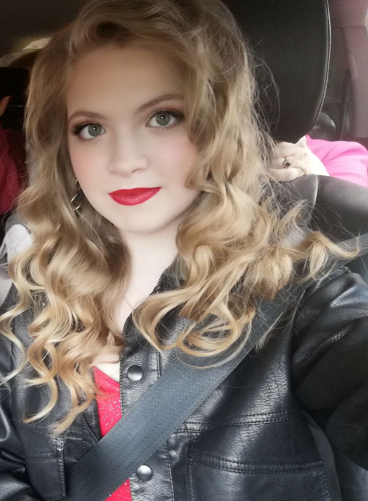
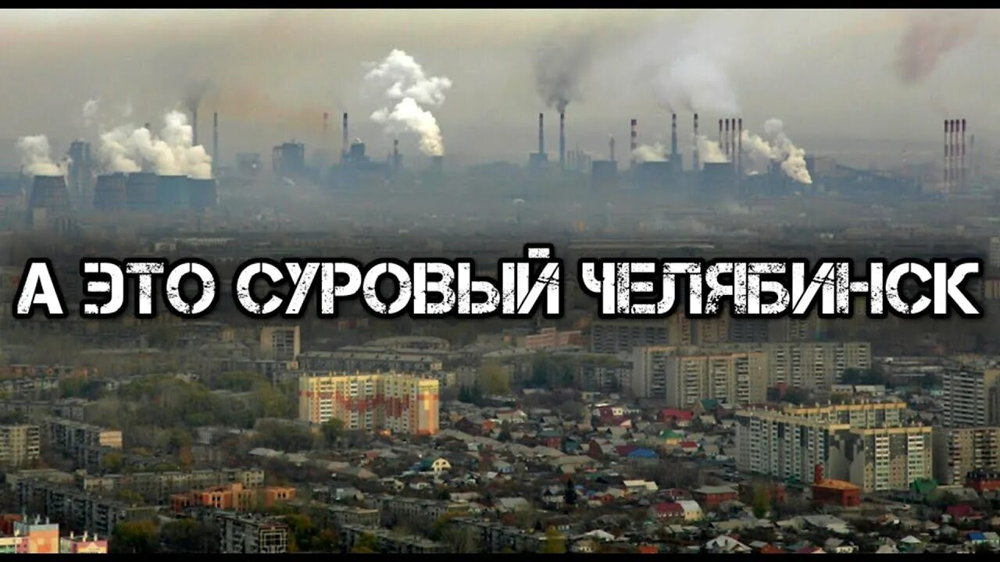
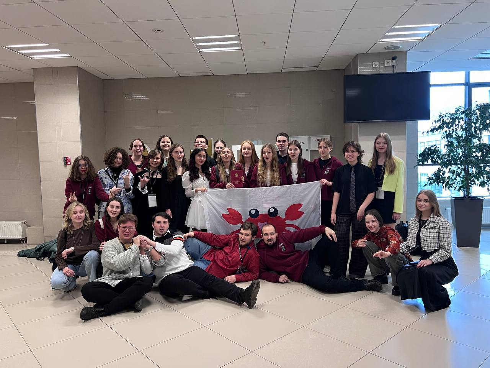
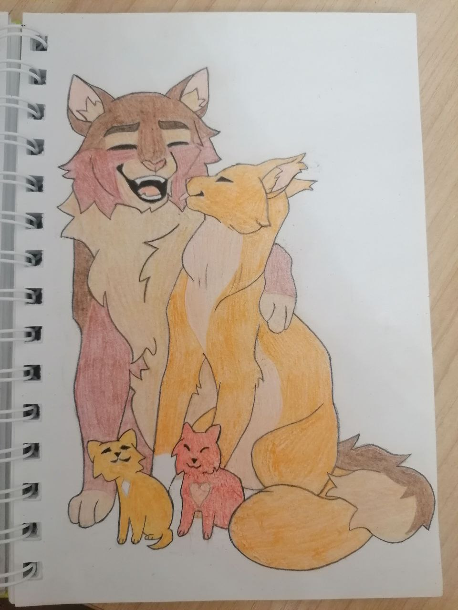
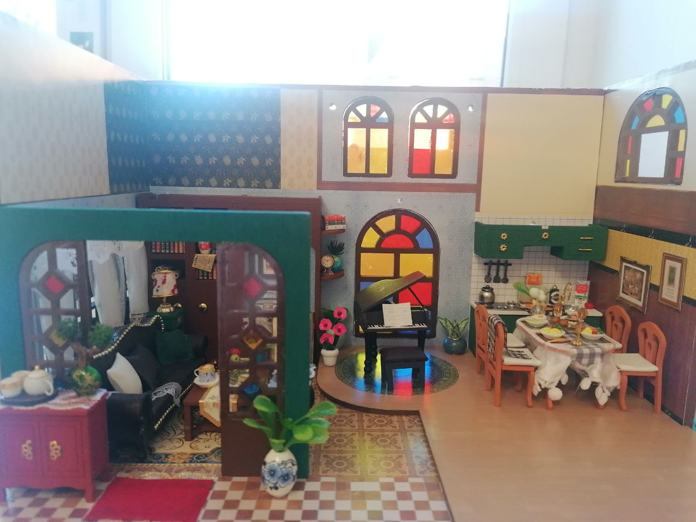
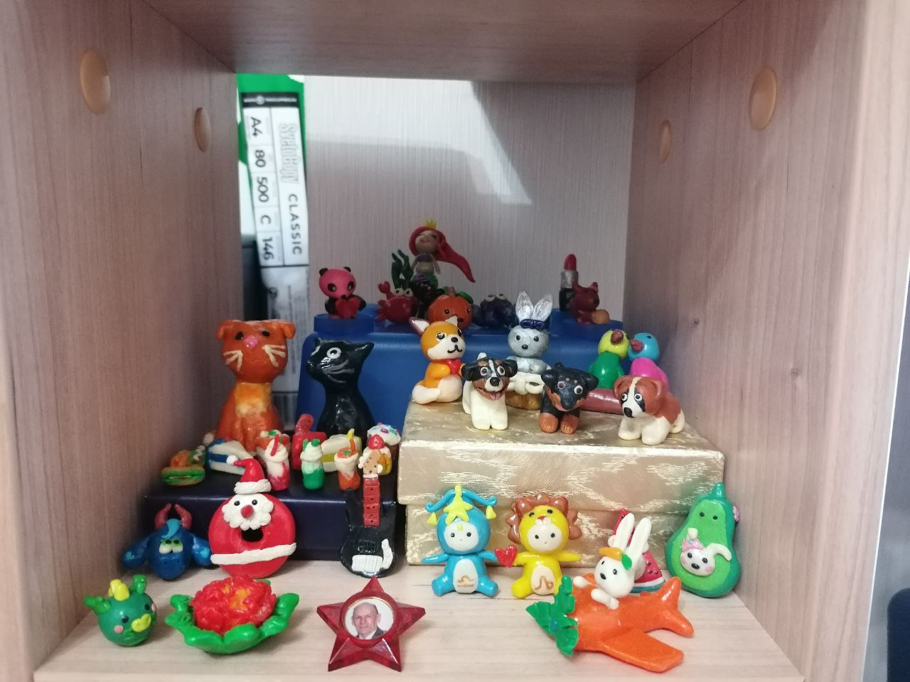
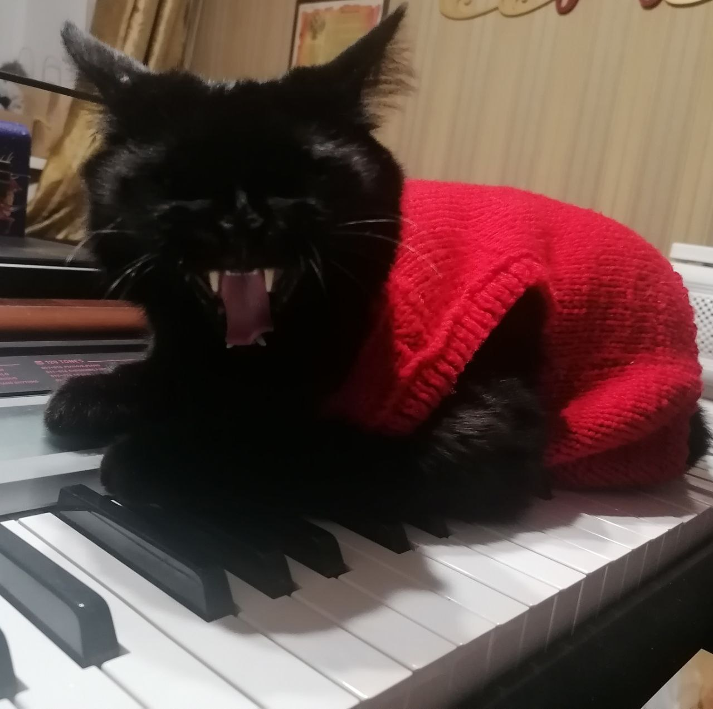
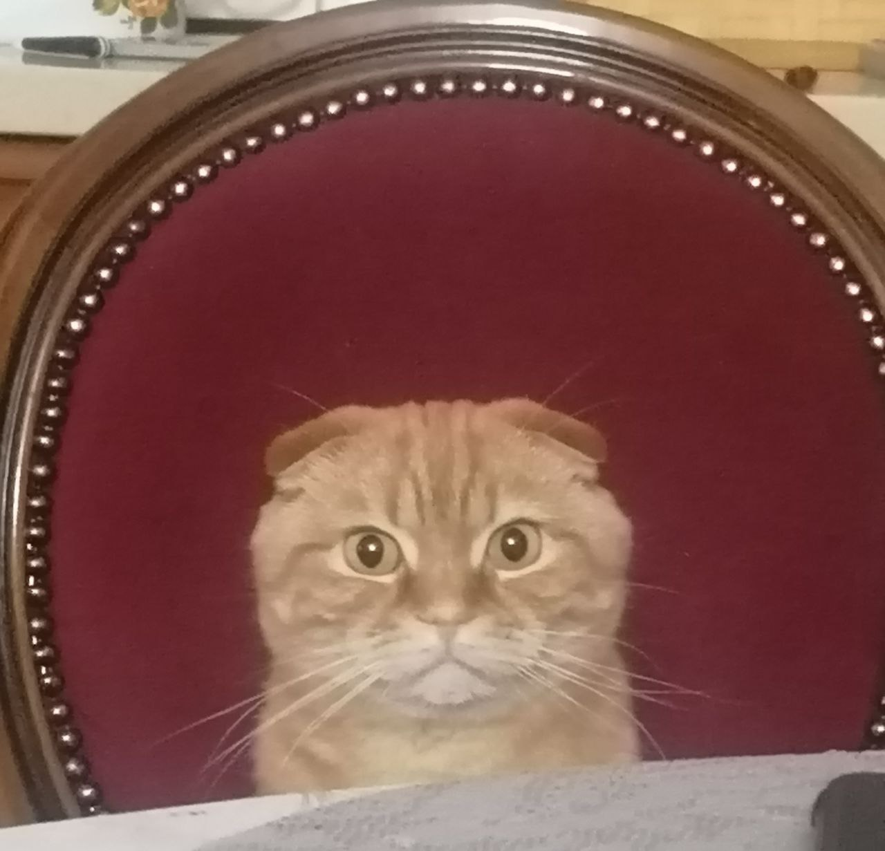

Место учёбы:
Фундаментальная и компьютерная лингвистика, НИУ ВШЭ, Москва
Человек, выживший после падения метеорита

Фундаментальная и компьютерная лингвистика, НИУ ВШЭ, Москва
Челябинск

Поверьте, там правда не так
5-9 класс: ФМЛ 31 г. Челябинска
10-11 класс: Школа ЦПМ Научный лингвистический класс АПО

Я очень творческий человек. И просто обожаю создавать что-то своими руками.
Я вышиваю, рисую, леплю, клею и много чего ещё. Творчество всегда меня вдохновляет и заряжает энергией. Вот некоторые мои работы:




